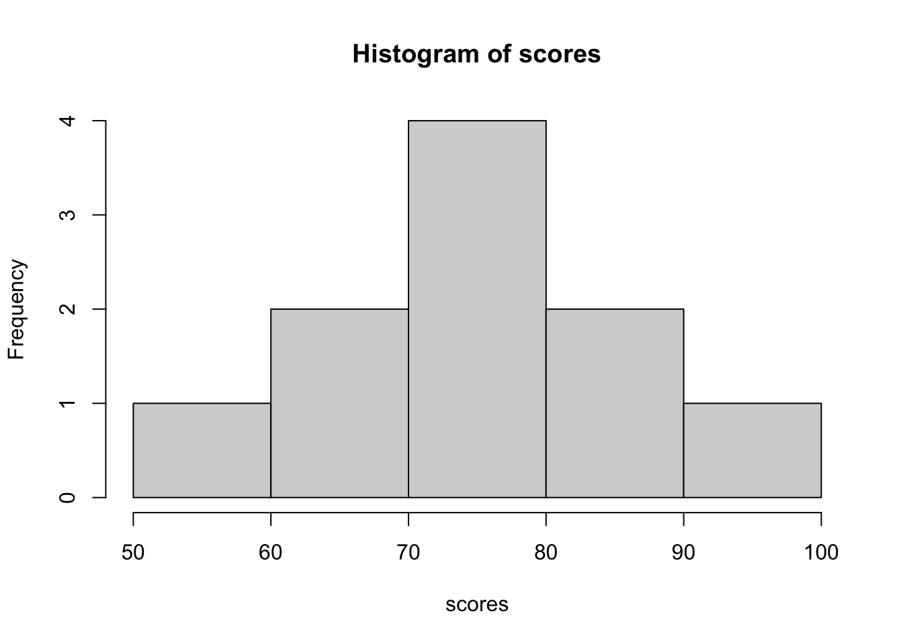

10 - 4[1] 65 * 3[1] 1520 / 4[1] 52^3[1] 8RStudio is an environment for working with the programming language R. During the course, you will use RStudio to write code, work with data, perform analyses, and create graphs. This guide introduces the most important things you need to know to start coding in R.
We recommend that you read Chapter 2 of An Introduction to Statistical Learning with Applications in R while working through this chapter of the compendium. Although the two chapters do not overlap perfectly, some concepts may be easier to understand if you simultaneously apply them in R. For example, when the textbook introduces the concept of a vector, you can directly practice creating and working with vectors in R.
If you do not already have it open, open the file my_second_quarto_document.qmd, located in the Quarto_files folder.
Create a new code chunk and copy-paste the code from the course compendium.
10 - 4[1] 65 * 3[1] 1520 / 4[1] 52^3[1] 8In R, you can store values in objects. We use the assignment operator <- to store the value on the right in the object on the left. In the example below we store - or assign - the value 10 to the object x. The object x now contains the value 10. You can find all objects under Environment. You can click on them to view more details, or you can refer to them directly in your code. Copy-paste the code into your quarto file.
x <- 10To see the value, write the object name ‘x’ in a code chunk and press “Run Current Chunk”. You can also write ‘x’ in the Console and press Enter:
x[1] 10You can use objects in calculations. For example you can assign 10 to ‘x’ and 5 to ‘y’. Then you can write x + y and R will give you the answer.
x <- 10
y <- 5
x + y[1] 15Try it yourself: Create two objects called a and b. Give them any numerical values you want and calculate their sum. You can also type this directly into the Console at the bottom of the screen.
A vector is a collection of values. The function c() combines values into a vector. In the example below we assign a vector to the new object called ‘ages’.
ages <- c(21, 25, 19, 32, 28)You can inspect the vector by typing ‘ages’ in a code chunk or in the Console:
ages[1] 21 25 19 32 28R contains many useful functions for working with numerical data. Below you find code to calculate the mean and median. The minimal value in a vector, the maximum value in a vector, and the standard deviation of a vector.
mean(ages)[1] 25median(ages)[1] 25min(ages)[1] 19max(ages)[1] 32sd(ages)[1] 5.244044Try it yourself: Create a vector containing five numbers and calculate its mean and standard deviation.
A function performs an operation. Functions usually follow this structure:
function_name(argument)For example:
mean(c(10, 20, 30))[1] 20Here: - mean() is the function. - c(10, 20, 30) is the argument supplied to the function.
Some functions have several arguments.For example, the function ‘round’ has two arguments: the number that should be rounded, and to how many digits it should be rounded.
round(3.14159, digits = 2)[1] 3.14When starting a new project, it’s always a good idea to first clear the R session/environment. You can do this with the following code:
# Clear the environment
rm(list = ls())A common file format is CSV.We will use the readr package to import data. We recommend that you load the data using the code found in the box below. If you have created an R project and saved your data in a folder called Data, it should be enough to just run or copy the code. Double-check that you have a data file in the Data folder. If you don’t, download the data and place it in that folder.
mydata <- read.csv("Data/data_edits.csv")The data will be stored in an object called mydata. Try yourself: copy the code and paste it into a new code chunk in your R session. Check so that you have a folder called ‘Data’ and a datafile called ‘data_edits.csv’ in the folder.
You can inspect the first five rows with the function head():
head(mydata)A data frame is one of the most common ways to store datasets in R. Here is a small example:
students <- data.frame(
name = c("Anna", "Ben", "Carlos"),
age = c(22, 25, 21),
score = c(78, 85, 91)
)
students name age score
1 Anna 22 78
2 Ben 25 85
3 Carlos 21 91You can select one variable using $:
students$score[1] 78 85 91You can then calculate, for example, the average score:
mean(students$score)[1] 84.66667It is also important to recognize that data can vary in type. A data frame typically contains different types of variables. Here are some common types of variables:
Categorical Variables: Some variables tell us which group or category each individual belongs to. Examples include being male or female, different countries, or telephone area codes (which categorize phone numbers into geographical regions).
Ordinal Variables: A typical course evaluation might ask, “How valuable do you think this course will be to you?” with responses such as: 1 = Worthless; 2 = Slightly; 3 = Middling; 4 = Reasonably; 5 = Invaluable. These categories have a clear order. We also call them factors.
Quantitative Variables: When a variable contains numerical values with meaningful units, we call it a quantitative variable. These variables record an amount or degree of something. For example, degrees Celsius tell us the scale of measurement, so we know how far apart two temperature values are.
Identifier Variables: A variable that has exactly as many unique values as there are cases is called an identifier. These variables uniquely identify each observation, such as student IDs, product IDs, or order numbers.
As you can read in Chapter 2 (pp. 28–29) of An Introduction to Statistical Learning with Applications in R, we tend to select statistical learning methods partly based on whether the response variable is quantitative or qualitative.
During the course, we will create a lot of figures (often called plots). Later in the course, you will be given code to produce more advanced figures. But we will start simple. Base R can create figures and plots using functions such as hist().
scores <- c(55, 62, 68, 71, 73, 75, 78, 82, 85, 91)
hist(scores)
You will learn more about figures/plots later in the course.
You can run one line by placing the cursor on the line and pressing:
Ctrl + EnterCmd + EnterYou can also select several lines and use the same shortcut to run all selected lines. For example:
x <- 5
y <- 10
z <- x + y
z[1] 15It is often useful to run your script from top to bottom. Later lines may depend on objects created earlier in the script.
Errors are a normal part of programming. For example, this code produces an error because the object does not exist:
my_number + 10Error: object 'my_number' not foundAn error message does not mean that you have failed. It tells you that R could not execute the command.
When you get an error:
R distinguishes between uppercase and lowercase letters. These are different object names:
score <- 10
Score <- 20
score[1] 10Score[1] 20For this reason, be careful with capitalization.
A few habits will make working with R much easier:
You do not need to memorize every R command. The most important things at the beginning are to understand how to:
You will become more comfortable with R by using it repeatedly throughout the course.
Create a new Quarto document and complete the following tasks:
height and store your height in centimeters.weight and store a weight in kilograms.
4.1.6 Comments
Comments are notes in your code that R does not execute. A comment starts with
#.Comments are useful for explaining what your code does.